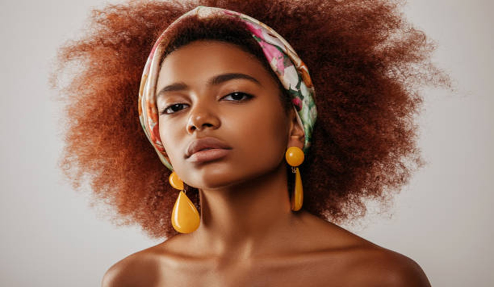

Hair Accessories for Curly Hair: Enhance Your Curls with Style and Care
At Yougonatural.com, we know that curly hair is unique and beautiful, but it also comes with its own set of challenges. Whether you’re looking to tame your curls, add a pop of style, or simply protect your natural texture, our collection of fashionable curly hair accessories is designed to meet the needs of curly-haired individuals everywhere. Explore our curated selection of products that not only enhance your curls but also promote healthy curly hair care.
Why Choose the Right Hair Accessories for Curly Hair?
Protect and Prevent Damage
Curly hair tends to be more delicate than straight hair, making it prone to breakage and split ends. By using the right accessories, you can reduce friction and keep your curls intact. For example, satin or silk scarves, hair ties, and turbans are gentle on curly hair and help prevent damage caused by rough materials like cotton.
Enhance Natural Curls
The right accessories can help define and enhance your natural curl pattern. Using curly accessories, like headbands or clips designed for curly hair, can help define your curly without causing them to lose their natural shape or texture.
Tame Frizz and Flyaway
Frizz is one of the most common challenges faced by people with curly hair. Certain accessories, such as fashionable curly hair accessories like scrunchies and hair wraps, help reduce frizz and keep flyaways under control, leaving your curls looking smooth and polished.
Our Collection of Curly Hair Accessories
Satin Scrunchies and Hair Ties
Silk Hair Wraps and Bonnets
Curly Hair Headbands
Hair Clips and Pins for Curly Hair
Curl-Defining Accessories
Benefits of Using the Right Curly Hair Accessories
Incorporating the right fashionable curly hair accessories into your routine isn’t just about looking good—it’s about caring for your curls and ensuring their health and longevity. Here are some of the key benefits of using accessories designed for curly hair:
1. Minimize Frizz and Flyaways:Frizz is a common concern for people with curly hair, but the right accessories can help tame those unruly strands. Silk scrunchies, hair wraps, and satin pillowcases help keep hair smooth and minimize frizz by reducing friction. These accessories also preserve your curl pattern, ensuring your curls remain defined throughout the day.
2. Reduce Breakage and Split Ends:Curly hair is more prone to breakage due to its structure. Using accessories like silk scarves, satin hair ties, and curl clips can help protect your hair from the damage caused by rough materials and tight elastics. These accessories help prevent friction and tension on your curls, which are common causes of breakage and split ends.
3. Protect Your Curls While Sleeping:When you sleep, your curls can easily become tangled or frizzy due to friction with your pillowcase. A silk or satin hair wrap can help protect your curls by reducing friction and locking in moisture, leaving you with smoother curls when you wake up. It's a simple yet effective way to maintain the health and appearance of your curls overnight.
4. Versatility and Style:Accessories are a fun and easy way to switch up your look. Whether you’re in the mood for a casual, boho-chic style or something more sophisticated, there’s a fashionable curly hair accessory for every occasion. From everyday scrunchies to elegant headbands, our collection helps you experiment with new styles while keeping your curls in check.

How to Care for Curly Hair with Accessories
Incorporating the right curly hair care practices into your routine is just as important as choosing the right accessories. Here are a few tips on how to keep your curls healthy while using accessories:
1. Use Silk or Satin Fabrics:Whenever possible, opt for accessories made from silk or satin. These fabrics are smooth, gentle on the hair, and help to reduce friction. Whether you’re using a scrunchie, hair wrap, or pillowcase, silk and satin help maintain the moisture in your hair, keeping your curls hydrated and frizz-free.
2. Avoid Tight Hair Ties:Tight elastics can cause tension on your curls, leading to breakage and damage. Always choose scrunchies or hair ties that are gentle and don’t pull on your curls. Our satin scrunchies are a great option to ensure your curls stay intact without causing damage.
3. Moisturize Your Curls Regularly:Curly hair tends to be drier than straight hair, so it’s essential to keep your curls moisturized. Use leave-in conditioners, oils, or curl creams to hydrate your hair, and consider incorporating a silk hair wrap at night to lock in the moisture.
Shop Now for Curly Hair Accessories
Ready to take your curly hair game to the next level? Shop our collection of fashionable curly hair accessories today! From satin scrunchies to curl-defining headbands, we have everything you need to protect, enhance, and celebrate your beautiful curls.
Shop now and give your curls the care they deserve with the right accessories from Yougonatural.com.